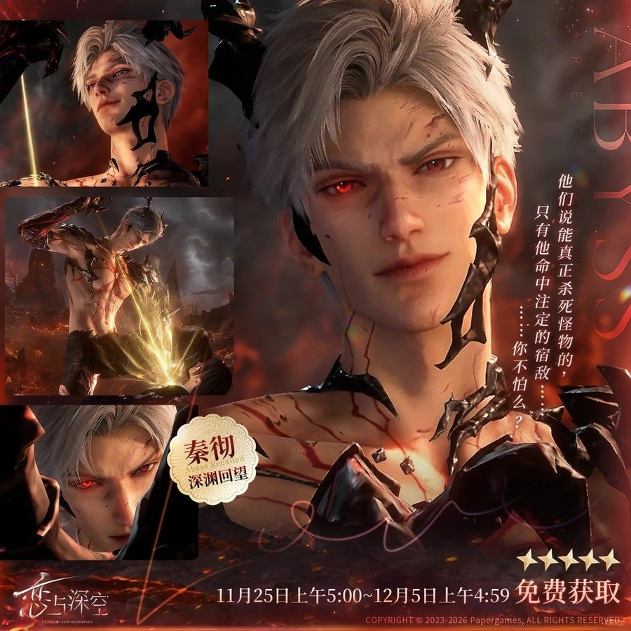

01 — Typography
大字衬线 + 极小等宽
主标题用 Cormorant 大写细衬线拉满视口，辅助信息全部交给 9–10px 的等宽小字， 只靠字号与字重拉开层级，不再依赖卡片与边框。
A Five-Star Memory · 主线分线 11.25
深渊回望之下 · 越界者无界
他们说能真正杀死怪物的，只有他命中注定的宿敌……
—— 你不怕么？

主标题用 Cormorant 大写细衬线拉满视口，辅助信息全部交给 9–10px 的等宽小字， 只靠字号与字重拉开层级，不再依赖卡片与边框。
图片与文字按杂志跨栏排布：一张通栏、两张方图、竖排日期做视觉锚点， 留白即分隔，红色只出现在关键字和一根 1px 竖线上。
背景是一层 WebGL 粒子：缓慢上升的火星、随鼠标轻微视差的摄像机和雾化渐变， 只画 1500 个点，降级到纯 CSS 也不影响阅读。
全部颜色收敛到三个值：血红 #e8394f、近黑 #050408、冷白 #ece9ef。 红只做强调，永远不做大面积铺底，暗色才撑得住「深渊」。